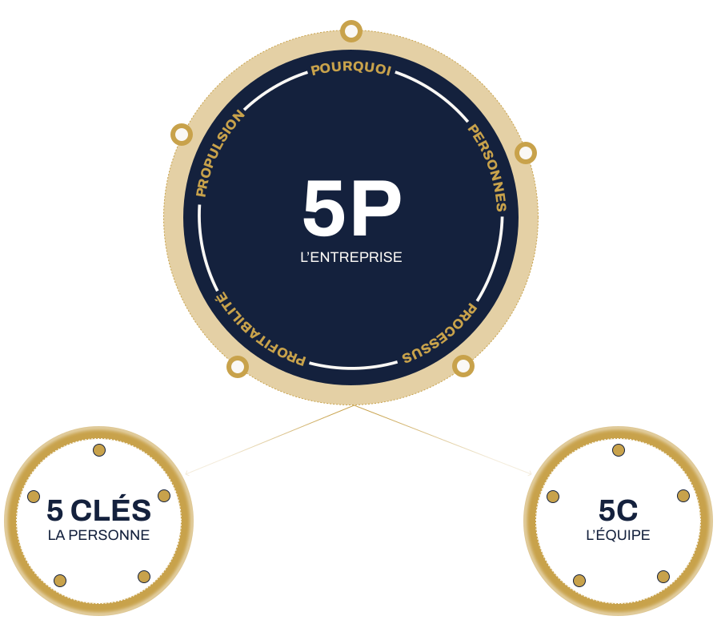

25 ans à accompagner les CEO/entrepreneurs du Québec inc.
Je travaille dans les vraies réunions de direction — celles où les décisions se prennent. À la STM, chez BMO, Transat, CGI, au Cirque du Soleil.
3 livres, 3 méthodes développées en français et en anglais, 5 saisons de Confessions de Leaders. Ce que j’apprends dans une salle, je le rends transmissible.
Trois modèles. Une seule question, à trois échelles.

Les 5 Clés
Comment un leader exprime son plein potentiel et reconnaît sa Contribution Stratégique Unique™, et trouve l'énergie de la porter.
- Transcender votre syndrome de l'imposteur
- Dépasser le mythe de la perfection
- Faire entendre votre voix
- Bâtir votre village
- Réaliser l'importance d'investir en vous
Le 5C
Comment une équipe de gestionnaires devient une véritable équipe de direction, autour d'un contrat d'équipe One Team™ clair.
- Conscience de soi
- Conditions gagnantes
- Coaching
- Contrat d'équipe
- Culture
Le 5P
Comment l'organisation entière acquiert la capacité de porter sa propre croissance, au-delà de ceux et celles qui la dirigent.
- Pourquoi
- Personnes
- Processus
- Profitabilité
- Propulsion
Un fil conducteur traverse les trois : la Contribution Stratégique Unique™ — ce que cette personne, cette équipe, cette entreprise sont les seules à pouvoir faire. C’est là que commence le premier des cinq P.
La croissance ne se planifie pas. Elle se rend possible.
Un dirigeant indispensable est un risque de valorisation.
Ce qui continue de croître après vous est la seule vraie mesure.
Repartez avec l’évaluation de votre capacité de croissance.
Nous accompagnons un nombre restreint d’entreprises à la fois — l’évaluation, elle, vous reste.